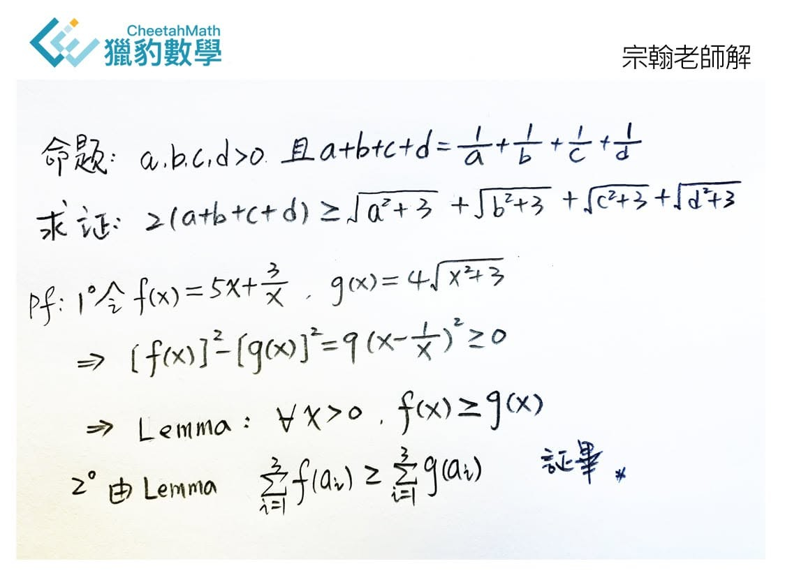

一題多解
在獵豹課堂（國、高中）常看到老師一題多解，甚至一些原來非常困難的問題，卻看到老師用很初等的方式解決！（宗翰老師常說的 ：輕舟已過萬重山）
前兩天我的文中舉一個奧數題型，大維博士給了一個專家級的解法，青昀博士給了一個奧數選手常用的解法，其實國中生也能解這個問題，宗翰老師做了示範與評註。
一題多解是獵豹正式課程的重頭戲！
宗翰老師語錄：
「許多搞競賽的常只希望找出簡單快速的方法」，但站在研究數學的立場 ，「快」與「簡潔」不是重點，「深度」與「潛力」才重要！
算幾、柯西等巧妙的變換固然可證明，但通常也只「說明了這件事實」。
數學家喜歡用函數的觀點來看不等式（如大維博士的方法）
函數讓我們能看出變化、消長與關聯。
對一個問題的多角度觀察與思維方式，是學好數學的重要法門！在我的課堂上，從小便要訓練養成他們這種態度。」
https://www.facebook.com/groups/695697124716309/permalink/794717838147570/
